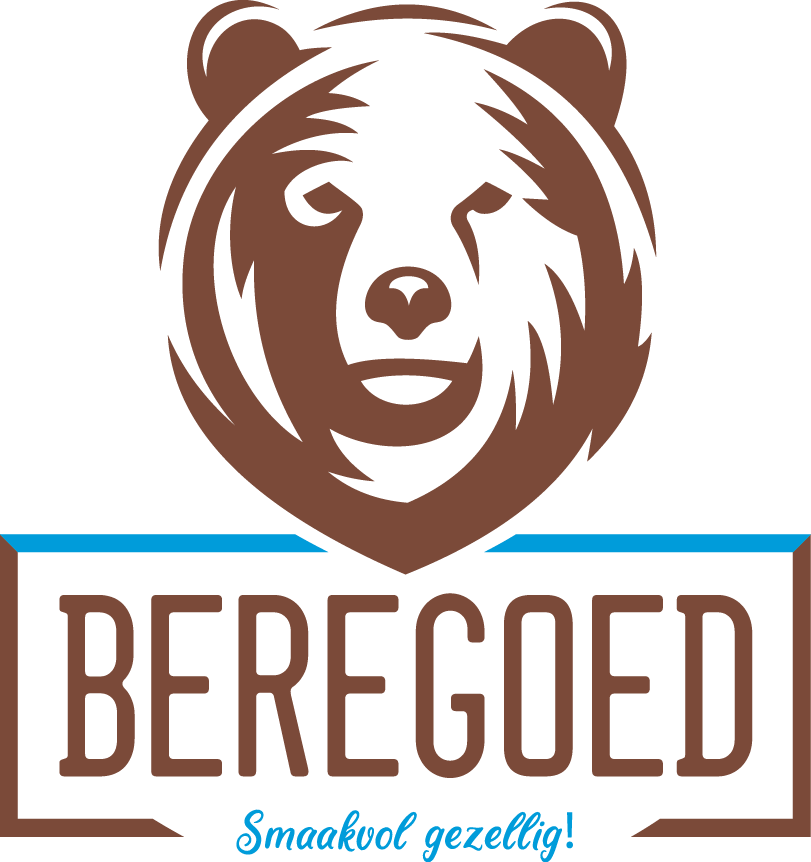
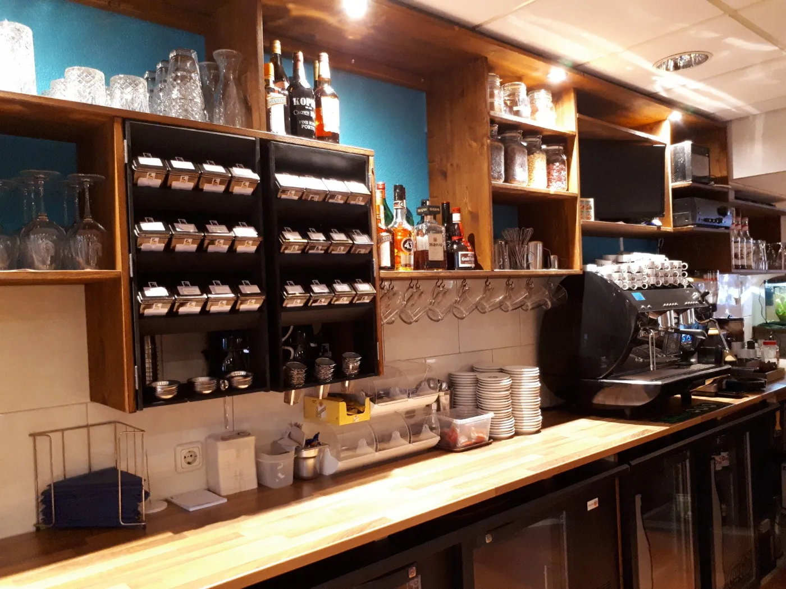
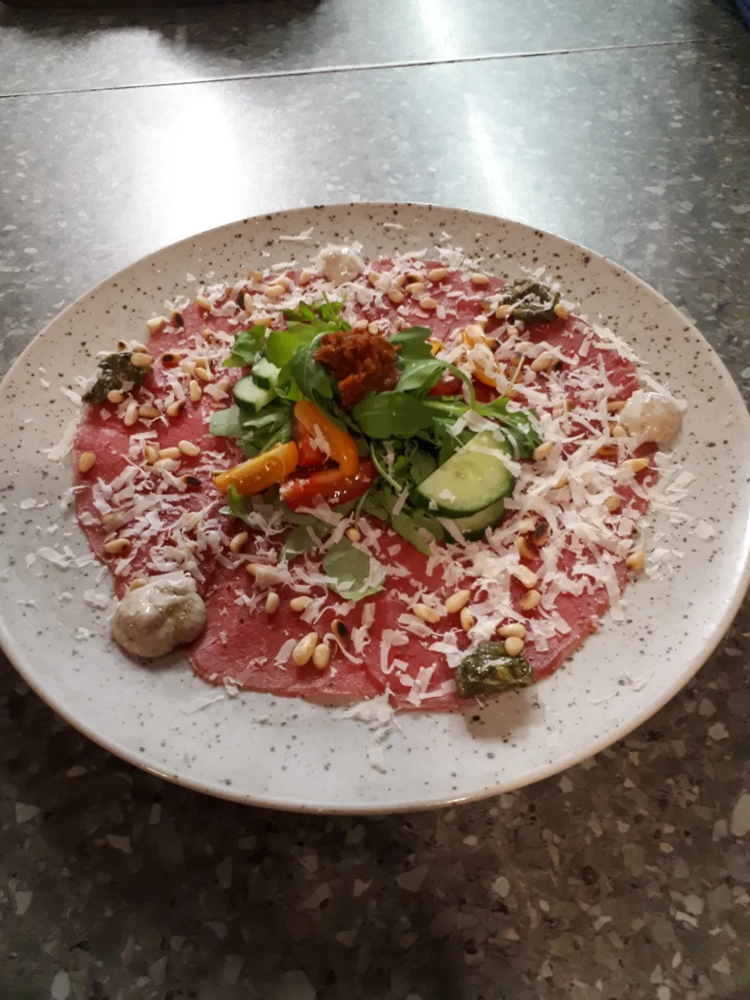
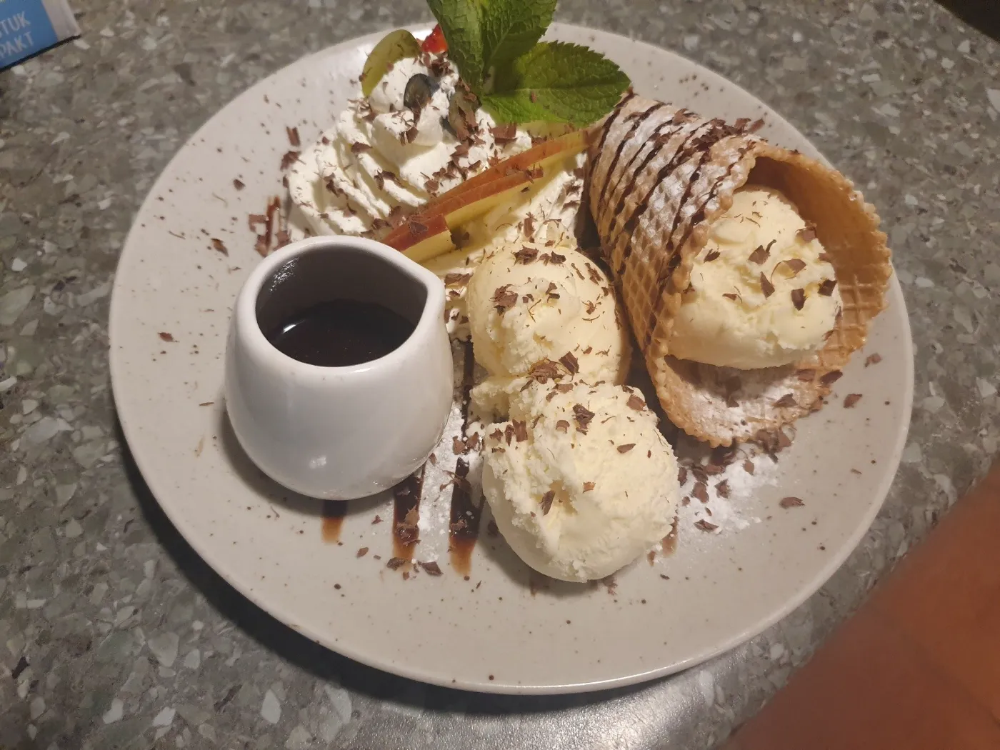
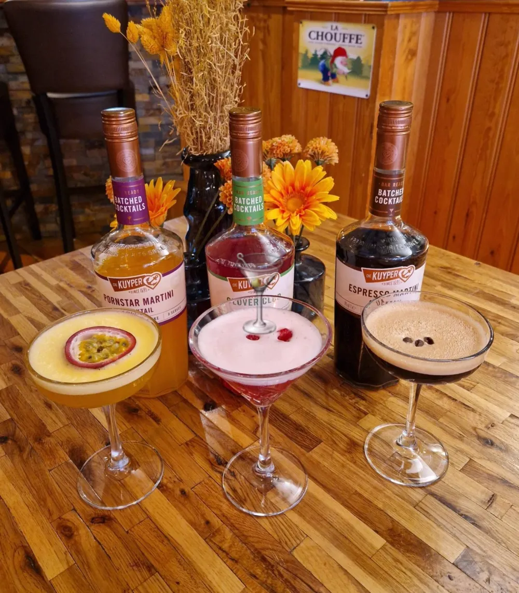
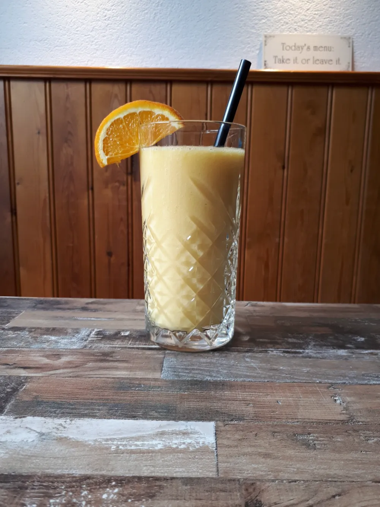
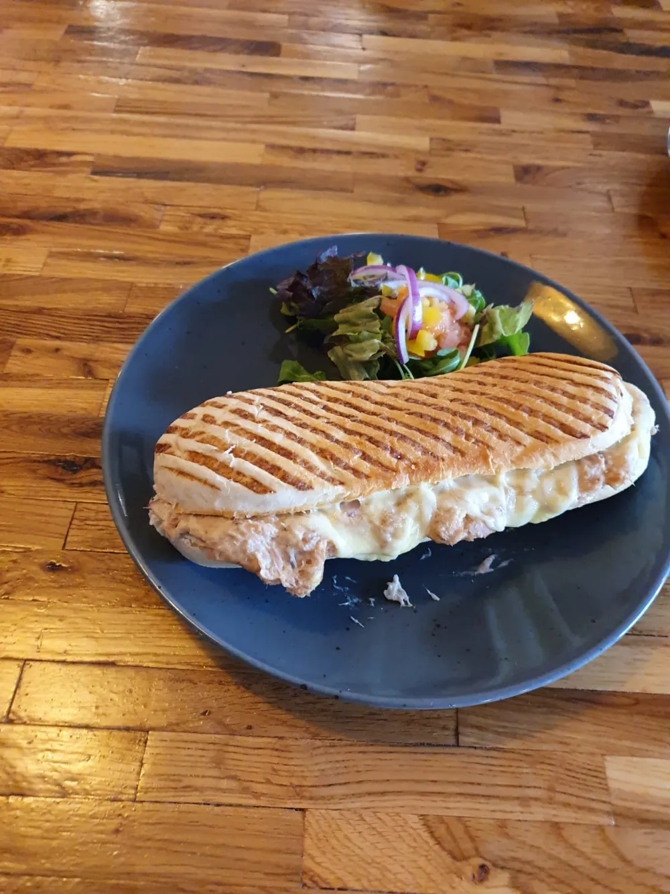

Wisselend Beregoedmenu
Varkenshaaspuntjes met champignonroomsaus, geserveerd met verse friet en salade.
Vraag naar de prijs

BeregoedSmaakvol gezellig!
Elke ochtend halen we verse ingrediënten, zodat wat we bij u aan tafel zetten zo vers en smaakvol mogelijk is. We hopen dat u trek heeft.
Dorpsstraat 43, Nunspeet

Welkom in ons restaurant in het gezellige centrum van Nunspeet. Hier bij Beregoed willen we elke dag opnieuw (h)eerlijke gerechten maken, serveren en u ervan laten genieten. We houden van verse ingrediënten en smaakvol eten.
In 2018 is Beregoed overgenomen en gaandeweg hebben wij er onze eigen draai aan gegeven. Door het vernieuwen van het gehele interieur hebben wij een huiselijke sfeer gecreëerd, met zowel binnen als buiten ruimte om gezellig te tafelen. Er is plaats voor iedereen en tevens ruimte voor grotere groepen.

Ook hebben we een aantrekkelijk menu bedacht voor gasten van B & B De Droomhoeve.
Elke dag hebben wij voor u een heerlijk actiemenu op de dinerkaart staan. Dit menu is verkrijgbaar zolang de voorraad strekt.
Varkenshaaspuntjes met champignonroomsaus, geserveerd met verse friet en salade.
Vraag naar de prijs
Huisgemaakte erwtensoep, geserveerd met roggebrood belegd met spek. OP=OP!
9,95
Heerlijke kerriesoep, geserveerd met 2 warme broodjes en roomboter.
8,95
Lunch, diner, koffie met gebak en borrelhapjes. Prijzen in euro.
Alle gerechten zijn de hele dag te bestellen.
Friet wordt geserveerd met appelmoes en mayonaise.
Alle gerechten worden geserveerd met salade en verse friet of gebakken aardappelen.
Alle soepen worden geserveerd met 2 broodjes en roomboter.
Alcoholvrije likeuren +0,70, cafeïnevrije variant +0,50.
Ruim assortiment losse thee, zie het theebord.
Van Belgische chocolade challets.
Voor speciaalbieren: vraag naar de bierkaart.




Let op onze nieuwe openingstijden. Alle gerechten zijn de hele dag te bestellen.
| Maandag | 12:00 tot 21:00 |
|---|---|
| Dinsdag | 11:00 tot 21:00 |
| Woensdag | 11:00 tot 21:00 |
| Donderdag | 9:30 tot 21:00 |
| Vrijdag | 9:30 tot 21:00 |
| Zaterdag | 9:30 tot 21:00 |
| Zondag | Gesloten |